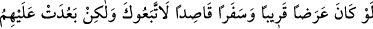

2- Nefsânî arzuları ağır bastığı halde daha hayırlısına harcamak beklentisiyle malını
nefsânî arzularını tatmin için harcamayan, nefsini bu arzuların gereğini yerine
getirmekten men eden kişi hem malı ile hem de nefsi ile cihad etmiştir. Malı ile cihad
etmiştir, çünkü malını kenz (yığmak) maksadıyla değil zamanı geldiğinde en faydalı şey
yolunda sarfetmek üzere saklamıştır. Malı ile cihad etmiştir, çünkü nefsini isteklerinden
ve hoşlandığı şeylerden alıkoymuştur. İşte cihâd-ı ekber (büyük cihad) budur.
3- Âdî kimselere ihtiyacını arzetmek hem şeriatte hem de tarikatta kınanmış ve kötü
kabul edilmiştir. Bu yüzden aç ve ihtiyaç sahibi olduğu halde durumunu insanlardan
gizleyen ve halini Allah Teâlâ’ya arzeden, O’na yönelen kişiye bir senelik rızkını
açması Allah’a vâcib olur. Sevgiliden sevgiliye yapılan şikayet tevhîdin ta kendisidir.
Başkasına şikayet şirk olur ve azabı gerektirir.
Akıllı kişi Ashâb-ı suffa’nın yolunu tercih eder. Çünkü onlar malları olduğunda
mallarıyla, malları olmadığında ise canlarıyla Hak ile beraber ve Hakk’ın yardımında
idiler. “Bir şeyin tamamı elde edilemedi diye tamamı terk edilmez.” Herkes gücünün
yettiği ölçüde sorumludur. İtaat ancak takat ölçüsündedir.
Âyetlerin mânâsından kalbimize doğanlar bunlardır. İşin hakîkatini en iyi Allah bilir.
Allah Teâlâ’dan bizi bütün gücümüzü (kendi yolunda) sarf etmeye, elde edemediğimiz
şeylerin peşine düşmeyi bırakmaya muvaffak kılmasını ve bizi kendi katına
ulaştırmasını niyaz ederiz. Matlûb ve maksûd ancak O’dur.
42. Yakın bir dünya menfaati ve orta bir yolculuk olsaydı, elbette sana tâbi
olurlardı. Fakat güç aşılacak mesafe, kendilerine uzak geldi. Bir de “Gücümüz
yetseydi, sizinle beraber çıkardık!” diye Allah’a yemin edecekler. Boşuna
kendilerini mahvediyorlar. Allah onların yalancı olduklarını biliyor.
Rivayet edilir ki, Hz. Peygamber (s.a.) insanlara Tebük gazvesine katılmayı emrettiği
zaman onlar üç gruba ayrıldılar. Bir grup acele edip emre itaat etti. Bunlar Muhâcir ve
Ensâr’ın ileri gelenleri idi.
Fakir müminlerin bir kısmına Allah’ın emri ve Rasûlü’nün işaretine uymak ağır geldi
ve nefislerinin arzusuna uymayı tercih ettiler.
Bir kısmı da geride kalmayı tercih ettiler. Bunlar münafıklar idi. Onlar hakkında bu
âyet nâzil oldu.
Ey Muhammed! onları çağırdığın şey, “yakın bir dünya menfaati ve orta bir yolculuk
olsaydı” mala olan tama’larından dolayı sefere çıkma hususunda “elbette sana tâbi